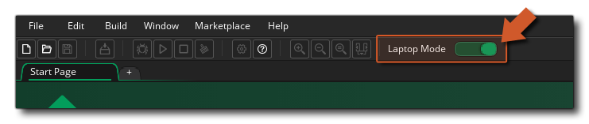

Die GameMaker Studio 2 IDE akzeptiert Maus- und Tastatureingaben, und viele Operationen können mit dem einen oder anderen oder beiden ausgeführt werden. In der Regel können Sie mit der linken Maustaste klicken  alles auswählen, verwenden
alles auswählen, verwenden  /
/  +
+  Um mehrere Elemente auszuwählen, halten Sie
Um mehrere Elemente auszuwählen, halten Sie  um Elemente in verschiedene Docks oder auf die Arbeitsbereiche zu ziehen, und auch die
um Elemente in verschiedene Docks oder auf die Arbeitsbereiche zu ziehen, und auch die  um kontextspezifische Menüs zu öffnen. Bitte beachten Sie, dass wenn Sie GameMaker Studio 2 auf einem MacOS-System ausführen und eine einzelne Maus verwenden, verwenden Sie bitte
um kontextspezifische Menüs zu öffnen. Bitte beachten Sie, dass wenn Sie GameMaker Studio 2 auf einem MacOS-System ausführen und eine einzelne Maus verwenden, verwenden Sie bitte  +
+  um einen rechten Mausklick zu bekommen
um einen rechten Mausklick zu bekommen  .
.
Darüber hinaus gibt es eine große Anzahl von Tastenkombinationen, die verwendet werden können, um die verschiedenen Arbeitsplatzelemente und Ressourcen - Editoren zu navigieren, und obwohl Sie eine vollständige Liste finden Sie hier wir werden schnell durch einige der wichtigsten gehen:
/
+ " Z ": Dies wird die vorherige Aktion rückgängig machen und funktioniert in den meisten Editoren. Sie haben auch mehrere Ebenen von Rückgängig machen, so dass Sie diese mehrfach drücken können, um" Änderungen "rückgängig zu machen.
: Dadurch wird das Handbuch geöffnet. Beachten Sie, dass Sie bei der Verwendung von DnD™ oder GML-Code auch eine Aktion oder Funktion (oder ein Schlüsselwort oder was auch immer) auswählen können, und drücken Sie dann
um das Handbuch auf der entsprechenden Seite zu öffnen.
: Dies kann verwendet werden, um alle verschiedenen angedockten Fenster in der IDE zu reduzieren oder zu erweitern.

Abgesehen von diesen Eingabemethoden gibt es auch eine eingeschränkte Unterstützung für Stiftgeräte und auch einen speziellen Modus für diejenigen, die an Projekten mit einem Laptop arbeiten. Beide werden im Folgenden erklärt:
Wenn Sie GameMaker Studio 2 auf einem Laptop verwenden, haben Sie oben im IDE- Modus für den Laptop-Modus eine weitere Option: 
Dies wird durch Verzug auf, kann aber ausgeschaltet werden, wenn Sie es vorziehen, indem Sie diese Taste Makeln. Der Laptop-Modus wird mit einigen Tools in der IDE kombiniert, um das Arbeiten mit einem Touchpad zu erleichtern und die drei wichtigsten Mausinteraktionen zu vereinfachen: Schwenken, Zoomen und Scrollen. Es verwendet zwei Modifikatortasten, um dies zu tun: Links
. Wenn der Laptop-Modus aktiviert ist, Left
Eine letzte Sache, die wir hier erwähnen werden, ist, dass die IDE für GameMaker Studio 2 auch minimale Unterstützung für Touchscreens bietet. Auf allen Betriebssystemen können Sie den Touchscreen verwenden, um Elemente im Hauptarbeitsbereich anzuklicken und zu ziehen, und wir unterstützen 2 simultane Zeiger, wobei ein zweiter Tipp einen Rechtsklick ausführt. Beachten Sie, dass die GameMaker Studio 2 IDE ab Windows 8 GameMaker unterstützt.